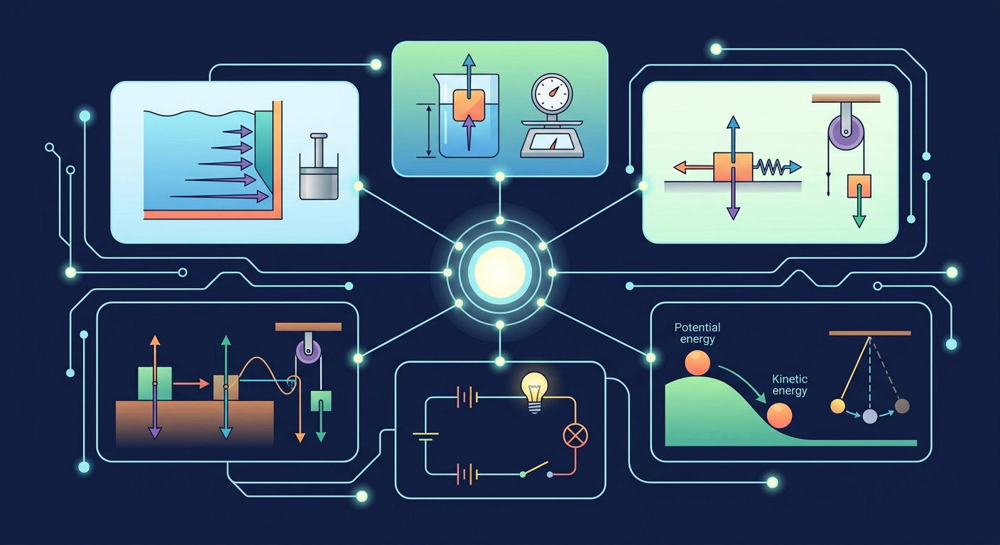

❓ 为什么游泳时越深的地方胸口越闷？
❓ 轮船那么重为什么不会沉？
❓ 死海为什么能让人浮起来？
学完这一课，这些问题你都能自信地回答。
🎯 能说出液体压强与深度的关系
🎯 能判断物体浮沉的受力条件
🎯 能计算浮力大小（阿基米德原理）
从"潜水耳朵疼"到"铁块也能漂起来"——揭开液体世界的秘密

知道液体内部向各方向有压强，能用 p = ρgh 计算压强
掌握 F浮 = ρ液gV排，理解浮力只与液体密度和排开体积有关
能比较浮力和重力判断物体上浮、下沉或悬浮
一个重500N的箱子放在地面上，接触面积0.5m²，它对地面的压强是多少？
水的密度约为多少 kg/m³？
你觉得：同样重的铁块和铝块，完全浸没在水中时，哪个受到的浮力更大？
你有没有潜过水或者去游泳馆深水区？
【And】 你在浅水区时感觉正常。
【But】 当你慢慢走到更深的地方（比如超过2米），你会感觉到耳朵疼，甚至胸口也有压迫感。
【Therefore】 这说明：液体内部是有压强的，而且越深处压强越大。那这个压强到底有多大？怎么算？
科学家用一种叫"U形管压强计"的仪器来测量液体内部的压强：
↑ 点击上方按钮，调节探头深度和液体密度，观察U形管液面差变化
| 公式 | p = ρgh |
|---|---|
| ρ（rho） | 液体密度，单位 kg/m³（如：水 = 1.0×10³） |
| g | 重力加速度，通常取 9.8 N/kg（有时近似用 10） |
| h | 深度（从液面往下算），单位 m |
| p | 压强，单位 Pa（帕斯卡） |
关键发现：液体压强 只跟液体密度 ρ 和深度 h 有关，跟容器形状、底面积大小都无关！
如图所示，三个形状不同的容器装有同种液体到同一高度。哪个底部压强最大？
你可能在想："固体压强需要除以面积（p=F/S），为什么液体不需要？"
这是一个非常好的问题！让我们用五镜头法来拆解它。
在液体内部某一点，想象上方有一根虚拟的水柱：
这根水柱的质量 = 体积 × 密度 = (S × h) × ρ
原来如此！ 面积 S 在推导过程中被消掉了，这就是为什么最终公式里看不到面积。
现在你可以回答这些经典问题了：
问题1：三峡大坝为什么要设计成"上窄下宽"？
→ 因为水深越大，压强越大（p=ρgh）。下部要承受更大的压强，所以要更厚实。
问题2：深海潜水员为什么要穿特制抗压服？
→ 海水密度比淡水大（≈1030 kg/m³），且深度可达数千米，压强巨大。10000米深的压强约等于 1000 个大气压！
一个装满水的杯子，水面到杯底的深度 h = 10 cm。求水对杯底的压强。（取 g = 10 N/kg，ρ水 = 1.0×10³ kg/m³）
【And】 你知道铁很重，扔水里就沉下去。
【But】 一艘钢铁制造的巨轮却能轻松浮在水面上！同样的铁，为什么有时候沉、有时候浮？
【Therefore】 这说明物体在液体中会受到一个向上的托力——我们称之为浮力。浮力的大小决定了物体是沉还是浮。
| 核心公式 | F浮 = ρ液gV排 |
|---|---|
| F浮 | 浮力（向上的托力），单位 N（牛顿） |
| ρ液 | 液体的密度（不是物体的！） |
| V排 | 物体排开的液体体积（不是物体自身体积！） |
浮力只取决于两件事：① 液体的密度 ② 物体排开了多少液体
跟什么无关？
❌ 跟物体的材料无关
铁块还是木块，只要排开的水一样多，浮力就一样大
❌ 跟浸没深度无关
完全浸没后，再往下放，浮力不变（V排不变）
把下面的因素拖到正确的框里：
✅ 影响浮力的因素
❌ 不影响浮力的因素
一块体积为 200 cm³ 的石头完全浸没在水中。求它受到的浮力。（ρ水=1.0×10³ kg/m³, g=10 N/kg）
浸没在液体中的物体同时受两个竖直方向的力：
| 状态 | 受力关系 | 结果 | 例子 |
|---|---|---|---|
| 上浮 ⬆️ | F浮 > G | 物体向上运动，直到部分露出水面后达到平衡 | 木头放入水中、充气的气球 |
| 悬浮 ↔️ | F浮 = G（且完全浸没） | 可以停在液体中任意深度 | 鱼通过鳔调节、潜艇悬停 |
| 下沉 ⬇️ | F浮 < G | 物体一直沉到底部 | 铁块、石子 |
当物体漂浮在水面上时（静止不动）：F浮 = G（二力平衡）。但此时物体只是部分浸入水中，所以 V排 < V物。这就是为什么巨轮能浮起来——它的平均密度小于水的密度！
死海的含盐量极高，其密度约为 1.2×10³ kg/m³（远高于普通海水的 1.03×10³）。人可以在死海上躺着看书而不沉下去。为什么？
轮船的平均密度小于水。空船时吃水线较浅，装载货物后排开更多水（V排增大），浮力随之增大，直到 F浮 = G（船+货）再次平衡。
超载危险：如果货物太多，G > F浮最大（即使完全浸没也提供的浮力），船就会沉。
鲸鱼的体内有一个叫做"鲸脂"的结构，相当于天然的"浮力调节器"。鲸脂密度略小于水，帮助鲸鱼保持浮力。同时通过肺部空气量的变化微调整体密度。
每下潜 10 米，水压增加约 1 个大气压。30 米深处，人体承受的压力相当于 4 个大气压！潜水员必须缓慢减压上升，否则溶解在血液中的气体会像打开汽水瓶一样——形成致命的减压病。
水坝必须做成上窄下宽的梯形结构。因为 p = ρgh，坝底承受的压强远大于顶部。三峡大坝高 185 米，坝底压强约 1.81×10⁶ Pa（约 18 个大气压）！
选择最接近正确思路的答案：
| 知识点 | 核心公式/结论 | 易错点提醒 |
|---|---|---|
| 液体压强 | p = ρgh | h 是深度（从液面向下），不是高度 |
| 压强特征 | 与容器形状、底面积无关 | 不要用固体压强直觉判断液体 |
| 浮力 | F浮 = ρ液gV排 | 用液体密度，不是物体密度！ |
| 浮力无关项 | 与物体材料、形状、浸没深度（完全浸没后）无关 | 这是最常见的考点陷阱 |
| 浮沉条件 | F浮>G 上浮 | F浮=G 悬浮/漂浮 | F浮<G 下沉 | 漂浮时 V_排 < V_物 |
1. 表面张力：除了压强和浮力，液体表面还有一种特殊的力——表面张力。它让水滴呈球形，让某些昆虫能在水面上"行走"。这涉及分子间作用力，高中会学到。
2. 连通器原理：几个底部相连通的容器装入同种液体，液面总会保持在同一水平线上。这也是 p = ρgh 的推论——同一水平面上的压强必须相等。
3. 气体也有压强和浮力！热气球就是利用空气浮力飞行的——加热空气使其密度减小，浮力大于重力就升空了。本质上和液体浮力用的是同一个公式！
✅ 错因1：认为浮力与物体质量有关。误区：实际浮力只取决于排开液体体积和密度。诊断：通过对比同体积不同质量物体的浮力实验纠正。
✅ 错因2：混淆压强与压力概念。误区：将容器底部受到的总压力等同于压强。诊断：用公式p=F/S强调压强是单位面积压力。
✅ 错因3：认为连通器必须形状相同。误区：忽略原理本质是液面压强平衡。诊断：展示不同形状容器组成的连通器实验。
先独立作答，再点选项查看对错与错因。
潜水员下潜过程中，所受液体压强变化的主要原因是
矿泉水瓶悬浮时，下列描述正确的是
将同一铁块分别放入淡水和海水，比较所受浮力
潜水艇通过改变____来实现上浮下潜，这应用了____原理。
答案：自身重力 阿基米德
潜水艇工作原理是改变重力与浮力的平衡关系
液体内部同一深度各方向压强____，这个特点称为液体压强的____性。
答案：相等 各向同
液体压强公式推导的重要特性
关于浮力产生原因，最准确的说法是
探究盐水浓度对鸡蛋浮沉状态的影响
将浮力拆解为上下表面压力差
液体压强由深度和密度决定，浮力是压强差的合力
比较木块漂浮与铁块下沉的受力差异
通过U形管压强计观察液体内部压强
解释潜水艇如何通过改变重力实现浮沉
口诀：压强深度成正比，浮力要看排开水
类比：像挤牙膏，越往下挤压力越大